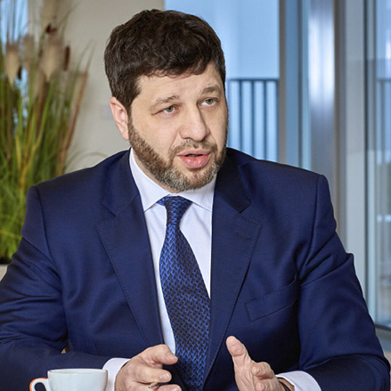
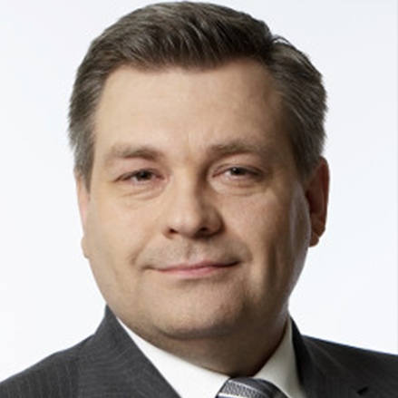

About event
It has been 10 years since the global financial crisis in 2008 yet investment markets are still struggling due to emergence of tighter regulations and new risks associated with unpredictable geopolitical factors.
CFS - an Asset Management company, based in London, invites you to attend a conference “Time of Changes. Financial Alternatives” held in Vienna, from November 22nd to November 24th 2018.
You will be able to meet and listen to top specialists in the financial and investment fields who will share their valuable experience in the industry as well as give advice on how to reduce your investment risks. Moreover, attendants of the conference will have a great and unique opportunity to get acquainted with innovative investment products developed by CFS specialists.
Rest assured that as a result of our discussions you will be offered new investment opportunities, allowing access to new financial strategies and products, based on your personal requirements.
Speakers

Simon Gaston
Partner at Harwell Capital
International CEO with more than 25 years financial services experience, leading businesses and helping clients successfully protect and grow their portfolios. Professional experience includes working at Falcon Private Wealth Ltd, Barclays Bank Suisse SA, UBS both in Switzerland and the UK. Simon Gaston currently provides access to technology and innovation focused companies, who are looking to take an equity stake through Private Equity and direct investment.
Romy A. Vinas
Principal Consultant, RAV Regulatory Compliance LLC
Senior compliance professional with more than 24 years of experience in financial crime compliance and regulatory risk management working for international and domestic financial institutions. Proven track record in successful application of U.S. and foreign banking regulatory requirements to wholesale and retail banking products. Highly skilled in all areas of compliance with extensive knowledge in economic and trade sanctions administered by OFAC. One of the first 100 compliance professionals in the U.S. and in the world to be certified in the field of Anti-Money Laundering.

Ivan Grech
Head of Business Development, Finance Malta
Ivan holds position as Head of Business Development Working at FinanceMalta, a non-profit public-private initiative that is set up to promote Malta as an international business and financial center within, as well as outside, Malta. It brings together and harnesses the resources of the industry and government to ensure Malta maintains a modern and effective legal, regulatory and fiscal framework in which the financial services sector can continue to grow and prosper.
NICHOLAS WARREN
Senior Manager Blockchain Financial Services, CSB Group
Nicholas Warren joined CSB group in August 2018 bringing on board over 16 years of consultancy experience to international clients on various possibilities presented by Malta as a Financial Services Centre. Before joining CSB, Nicholas held roles with big 4 Audit Firms, in banking audit and fund departments. In the field of blockchain he provides clients with guidance on Malta legislative frameworks in the field of Initial Coin Offerings, Crypto Exchanges, virtual financial asset services as well as to those companies who wish to establish a presence and provide technology related services to such entities.

Leonid Kil
Owner of IMG Integral Management Group
Leonid served as Chairman of AB LV Asset Management and AB LV Capital Markets until July 2018. He worked for 12 years at Rietumu Banka, where he was head of subsidiary Financial Companies in Latvia, Russia and Cyprus that serviced customers' assets on the World's Financial Markets. He joined ABLV in April 2006, having more than a decade of experience in Managing Customers' Assets and Operations with Financial Instruments on Global Markets.

Vadim Burtsev
Member of the Board
Bonds Invest, AS PV investīcijas, AS AFI investīcijas
Vadim has built his experience in financial services sector for over 15 years working at two of the top 5 Latvian banks – Rietumu Banka and ABLV Bank. This background has enabled him to see the full spectrum of financial services – from customer insight to asset management. However, his key focus has been on capital markets and securities trading.

MAXIM ARTSINOVICH
President and Creative Director of Jewellery House MaximiliaN London
Founder and owner of MaximiliaN London, an English jewelry house manufacturing premium jewelery and selling it worldwide. Maxim is also creative director of the jewelry line MaximiliaN Silver Label, as well as a member of the Hermitage Friends Club. He acts as curator of modern stone-cutting art collection at the Hermitage, donated by him personally to the museum. Maxim is a member of the board of directors of the Compulink Group of Companies, one of the largest system integrator companies in Russia.